表示
表示 参考位置的指纹图案，
参考位置的指纹图案， 是该参考位置的空间坐标。指纹模式可以是来自多个信标站的原始RSSI值，或者是从RSSI中提取的任何其他特征向量，可以表示如下:
是该参考位置的空间坐标。指纹模式可以是来自多个信标站的原始RSSI值，或者是从RSSI中提取的任何其他特征向量，可以表示如下:许多物联网应用，如零售商、智能家居、智能校园和医院的室内导航和位置感知营销，都依赖于室内定位。此类应用生成的输入数据通常来自多种来源，如红外线、超声波、Wi-Fi、RFID、超宽带、蓝牙等。
这些设备和技术的通信指纹(如Wi-Fi指纹数据)可以使用DL模型进行分析，以预测设备或用户在室内环境中的位置。在这一章中，我们将通过一个实际操作的例子来讨论如何在物联网应用中将DL技术用于室内定位。此外，我们将讨论物联网环境中室内定位服务的一些部署设置。本章将简要介绍以下主题:
随着移动互联网的快速发展，基于位置的 S 服务 ( LBS )在大型公共室内场所越来越受欢迎。在这样的室内位置，接收信号强度指标 ( RSSI )通常被用作物联网设备从无线接入点(WAP)接收的功率水平的估计值。然而，当与信号源的距离增加时，信号变弱，无线数据速率变慢，导致整体数据吞吐量降低。
迄今为止，基于诸如超声波、红外线、图像、光、磁场和无线信号的测量技术，已经提出了几种室内定位技术。例如，基于蓝牙低能耗 ( BLE )的室内定位已经吸引了越来越多的兴趣，因为它是低成本、低功耗的，并且在几乎每个移动设备上都无处不在。另一方面，Wi-Fi定位系统基于Wi-Fi信号的信道状态信息 ( CSI )。
最近，已经提出了DL方法，其中DL模型用于学习高维CSI信号的指纹模式。尽管每次Wi-Fi扫描都包含其附近可用AP的信号强度测量值，但只能观察到环境中网络总数的一个子集。
此外，由于这些设备是具有非常小的处理能力的低端设备，在这些方法中使用的不可预测的减弱或增强组合会影响多径信号，这将破坏RSSI和传输距离之间的关系，并因此被证明效率较低。另一方面，指纹方法不依赖于距离的恢复，而是仅使用测量的RSSIs作为空间模式。因此它不易受到多径效应的影响。
通常使用的指纹识别方法有两个阶段:离线阶段和在线阶段。
一个阶段使用指纹数据库来构建位置相关参数，这些参数是从测量的RSSIs的参考位置提取的，称为离线阶段。在定位阶段，也称为在线阶段，使用数据库中最相关的RSSI指纹将RSSI测量值映射到参考位置，解释如下:
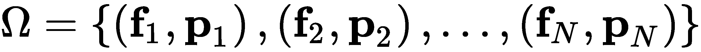
在上式中，是数据库中参考位置的总数，表示参考位置的指纹图案，是该参考位置的空间坐标。指纹模式可以是来自多个信标站的原始RSSI值，或者是从RSSI中提取的任何其他特征向量，可以表示如下:
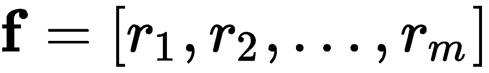
然而，在现有的指纹识别系统中，原始RSSI值被用作空间模式。在上式中， m 是BLE信标站或Wi-Fi接入点的总数， 代表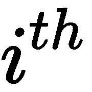站的实测RSSI值。
代表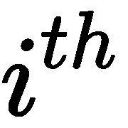站的实测RSSI值。
现在，我们大致知道什么是室内定位了。在下一节中，我们将看到如何使用机器学习和DL算法来开发这样一个室内定位系统。
基于DL的物联网室内定位
然而，室内定位仍然是一个开放的研究问题，主要是由于室内环境中GPS信号的丢失，尽管有先进的室内定位技术。幸运的是，通过使用DL技术，我们可以以合理的精度解决这个问题，特别是因为使用自动编码器 ( AEs )和它们的表示能力可以是一个非常好的变通方法和可行的选择。在这种情况下，我们有两种选择:
在AE网络前面添加一个全连接层和一个softmax层，它将充当端到端的分类器。
想法是使用AEs进行表示学习，以便网络可以很好地学习特征。然后，编码器部分的输出可以用于初始化分类器部分的权重。在下一节中，我们将讨论k-NN和AEs，并了解它们如何用于解决室内定位问题。
k-最近邻分类器
从技术上讲，如果指纹数据库由( X，y )组成，其中 X 是RSSI值， y 是已知位置的集合，那么k-NN首先计算距离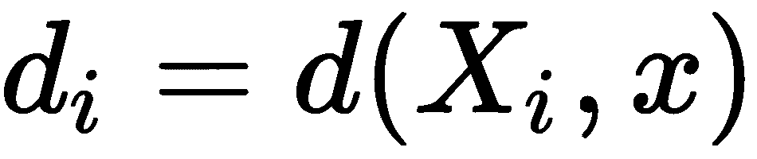，其中 x 是未知样本。然后，它计算一个集合，该集合包含从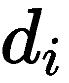到 k 最小距离的索引。然后，返回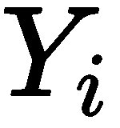的多数标签，其中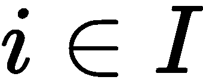。换句话说，使用k-NN，通过计算观测数据和数据库中训练RSSI样本的记录之间的相似性来执行分类。最终，在第一个 k个最相似记录中出现次数最多的格网单元就是估计位置，如下图所示:
使用k-NN算法定位物联网设备
在上图中，对于k=4，Wi-Fi数据包跟踪被分类为在网格c(绿色三角形)记录中，而当 k=6 时，它被分类为在网格a(红色矩形)中。因此，k-NN可以被认为是一种懒惰的学习方法，在这种方法中，函数只是局部近似，所有计算都推迟到分类发生时进行。k-NN算法的好处是它对噪声数据具有鲁棒性。特别地，加权距离的平方反比被用作距离度量。然而，如果它已经在大量的训练数据上训练过，它会表现得很好。
也可能有缺点。比如我们需要确定 K 参数值，也就是最近邻的个数。基于所使用的距离度量，它的表现非常不同。使用k-NN算法的计算成本相当高，因为需要计算训练数据中每个样本的距离。这在非常高维的数据的情况下变得更加糟糕。在下一节中，我们将使用k-NN作为端到端分类器，而不是使用神经网络设置来提供基于AE的分类器和k-NN分类器之间的比较分析。
声发射分类器
编码器:使用被称为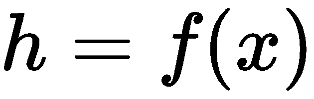的函数将输入编码或压缩成潜在空间表示
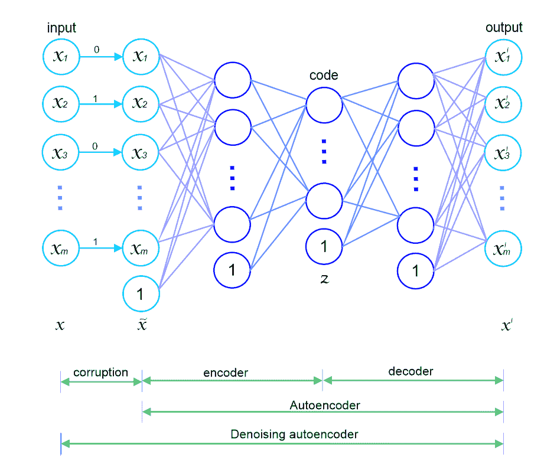
因此，一旦我们手头有了指纹数据库，就可以用原始RSSI测量值来训练AEs，并且训练好的网络本身被用作特定参考位置的指纹模式。由于深度网络可以用每一层的权重来表示，因此指纹图案可以表示如下:
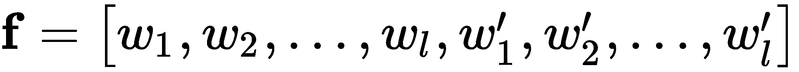
上式中， l 为一个AE的编码隐层个数， 和
和 分别代表
分别代表 编码隐层及其解码镜像层的权重，如下图:
编码隐层及其解码镜像层的权重，如下图:
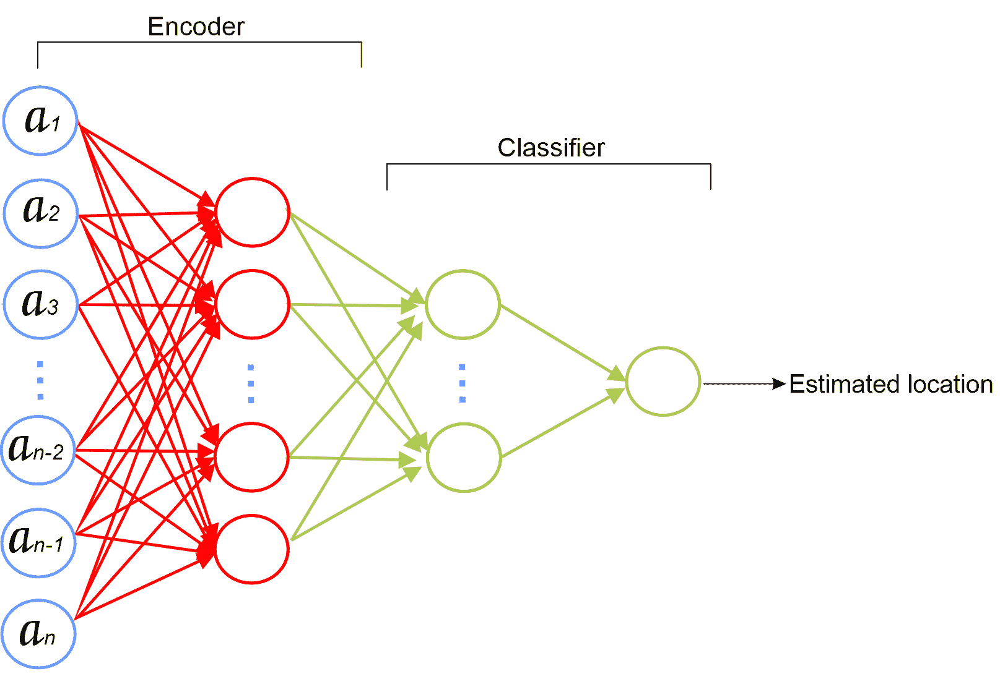
然后，我们可以使用AE的中心隐藏层的输出作为完全连接的softmax层的输入来预测位置，如上图所示。既然我们知道了室内定位在神经网络或机器学习环境中是如何工作的，我们现在可以开始使用Wi-Fi指纹识别的动手示例。
示例–通过Wi-Fi指纹识别进行室内定位
描述数据集
trainingData.csv:19937条培训/参考记录
属性001到520(即WAP001到WAP520) :这些是接入点的强度测量值，其值在-104到0和+100之间。值100表示没有检测到WAP001。

用于特征空间表示的AE架构
分类器部分由两个隐含层组成；根据问题的复杂程度，需要选择神经元的数量。当AE的权重的无监督学习完成时，网络的解码器部分被断开。然后，通过将整个网络变成分类器，全连接的层通常被放置在编码器的输出之后。在下图中，预训练的编码器部分连接到完全连接的softmax层(来源:使用深度学习的Wi-Fi指纹的低努力地点识别，Michał .等人，arXiv:1611.02049v1):
基于Wi-Fi扫描输入对建筑物及其楼层进行分类的AE分类器的架构
最终输出图层是softmax图层，它输出当前样本属于所分析类别的概率。现在，没有任何进一步的延迟，让我们开始实现前面的网络。
履行
一旦我们导入了所有必需的包，我们就可以开始准备训练集和测试集，它们可以分别用于训练和评估模型。
import pandas as pd
import numpy as np
import tensorflow as tf
from sklearn.preprocessing import scale
from keras.models import Sequential
from keras.layers import Input, Dense, Flatten, Dropout, Embedding, BatchNormalization
from keras.layers.convolutional import Conv1D,MaxPooling1D
from keras.layers import LSTM
from keras.layers.merge import concatenate
from keras.layers import GaussianNoise
from pickle import load
from keras import optimizers
from sklearn.metrics import classification_report
from sklearn.metrics import confusion_matrix
from sklearn.metrics import precision_recall_curve
from sklearn.metrics import precision_recall_fscore_support
import pandas_profiling
探索性分析
当然，使用pandas_profiling来快速了解你的数据是值得的。我们来试试吧！首先，我们通过显式传递header=0来读取训练数据，以便能够替换现有的名称:
pandas_profiling.ProfileReport(df)
要检索由于高度相关而被拒绝的变量列表，可以使用以下命令:
trainDF = pd.read_csv("trainingData.csv",header = 0)
这将生成显示数据集信息的报告:
profile = pandas_profiling.ProfileReport(trainDF)
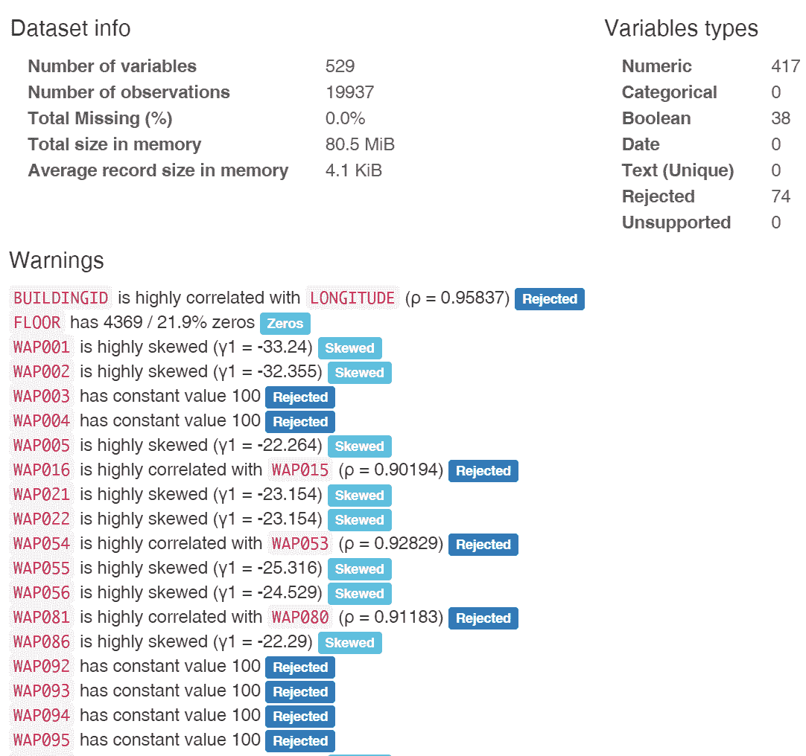
让我们看看报告的前几行。正如我们所看到的，我们没有任何空值，所有的变量都是数字，这很好。然而，一些特征不太重要，与其他变量高度相关(例如，74个变量被拒绝)，并且一些变量非常偏斜，给出非常宽的分布。甚至我们的训练数据集也有637个重复行。被拒绝的变量不会帮助模型很好地学习。因此，这些可以从训练数据中删除(尽管这是可选的)。可使用get_rejected_variables方法收集此类被拒绝变量的列表，如下所示:
如果您想生成一个HTML报告文件，将配置文件保存到一个对象并使用to_file功能，如下所示:
rejected_variables = profile.get_rejected_variables(threshold=0.9)
这将生成一个包含必要信息的HTML报告。现在我们知道了数据和变量，让我们把注意力集中在特性工程步骤上，通过这些步骤，我们将准备训练和测试所需的数据。
profile.to_file(outputfile="Report.html")
准备训练集和测试集
然后，我们构建真正的标签。我们将所有建筑id和建筑楼层转换为字符串:
featureDF = np.asarray(trainDF.iloc[:,0:520]) # First 520 features
featureDF[featureDF == 100] = -110
featureDF = (featureDF - featureDF.mean()) / featureDF.var()
然后，我们试着创建两个变量:train_x和train_y。这将有助于避免培训评估过程中的混乱:
labelDF = np.asarray(trainDF["BUILDINGID"].map(str) + trainDF["FLOOR"].map(str))
labelDF = np.asarray(pd.get_dummies(labelDF))
现在，与训练集类似，我们也准备测试集:
train_x = featureDF
train_y = labelDF
print(train_x.shape)
print(train_x.shape[1])
一旦我们准备好了培训和测试集，我们现在就可以继续创建AE了。
testDF = pd.read_csv("validationData.csv",header = 0)
test_featureDF = np.asarray(testDF.iloc[:,0:520])
test_featureDF[test_featureDF == 100] = -110
test_x = (test_featureDF - test_featureDF.mean()) / test_featureDF.var()
test_labelDF = np.asarray(testDF["BUILDINGID"].map(str) + testDF["FLOOR"].map(str))
test_y = np.asarray(pd.get_dummies(test_labelDF))
print(test_x.shape)
print(test_y.shape[1])
Once we have the training and the test sets ready, we can now proceed with creating an AE.
创建AE
然后，我们创建AE的编码器部分，它有三个隐藏层:
number_epochs = 100
batch_size = 32
input_size = train_x.shape[1] # 520
num_classes = train_y.shape[1] # 13
接下来，我们创建AE的解码器部分，它有三个隐藏层，后面是compile()方法:
def encoder():
model = Sequential()
model.add(Dense(256, input_dim=input_size, activation='relu', use_bias=True))
model.add(Dense(128, activation='relu', use_bias=True))
model.add(Dense(64, activation='relu', use_bias=True))
return model
然后，我们将它们堆叠在一起，构建一个AE:
def decoder(encoder):
encoder.add(Dense(128, input_dim=64, activation='relu', use_bias=True))
encoder.add(Dense(256, activation='relu', use_bias=True))
encoder.add(Dense(input_size, activation='relu', use_bias=True))
encoder.compile(optimizer='adam', loss='mse')
return encoder
让我们看看AE的结构和摘要:
encoderModel = encoder() # Encoder
auto_encoder = decoder(encoderModel) # The autoencoder
auto_encoder.summary()
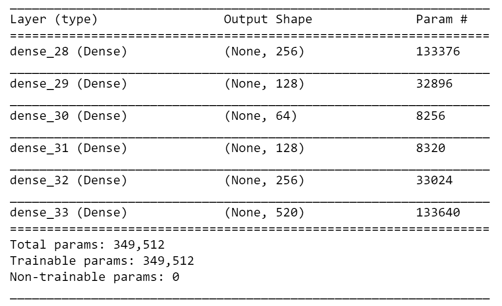
然后，我们可以用100次迭代的训练数据来训练AE，其中10%的训练数据将用于验证:
由于我们在前面的代码块中设置了verbose =1，在训练期间，您将会看到以下日志:
auto_encoder.fit(train_x, train_x, epochs = 100, batch_size = batch_size,
validation_split=0.1, verbose = 1)
然后，我们将训练集和测试集的编码器网络的输出作为潜在特征:
Train on 17943 samples, validate on 1994 samples Epoch 1/100 17943/17943 [==============================] - 5s 269us/step - loss: 0.0109 - val_loss: 0.0071 Epoch 2/100 17943/17943 [==============================] - 4s 204us/step - loss: 0.0085 - val_loss: 0.0066 Epoch 3/100 17943/17943 [==============================] - 3s 185us/step - loss: 0.0081 - val_loss: 0.0062 Epoch 4/100 17943/17943 [==============================] - 4s 200us/step - loss: 0.0077 - val_loss: 0.0062
Epoch 98/100 17943/17943 [==============================] - 6s 360us/step - loss: 0.0067 - val_loss: 0.0055
....... Epoch 99/100 17943/17943 [==============================] - 5s 271us/step - loss: 0.0067 - val_loss: 0.0055 Epoch 100/100 17943/17943 [==============================] - 7s 375us/step - loss: 0.0067 - val_loss: 0.0055
创建声发射分类器
X_train_re = encoderModel.predict(train_x)
X_test_re = encoderModel.predict(test_x)
或者，我们可以弹出前三层，如下所示:
for layer in auto_encoder.layers[0:3]:
layer.trainable = True
然后，我们在前面添加完全连接的层，BatchNormalization层后面是第一个密集层。然后，我们添加另一个密集层，接着是BatchNormalization和Dropout层。然后，我们放置另一个密集层，接着是一个GaussionNoise层和一个Dropout层，最后是softmax层:
for i in range(number_of_layers_to_remove):
auto_encoder.pop()
最后，我们得到完整的声发射分类器:
auto_encoder.add(Dense(128, input_dim=64, activation='relu', use_bias=True))
auto_encoder.add(BatchNormalization())
auto_encoder.add(Dense(64, activation='relu', kernel_initializer = 'he_normal', use_bias=True))
auto_encoder.add(BatchNormalization())
auto_encoder.add(Dropout(0.2))
auto_encoder.add(Dense(32, activation='relu', kernel_initializer = 'he_normal', use_bias=True))
auto_encoder.add(GaussianNoise(0.1))
auto_encoder.add(Dropout(0.1))
auto_encoder.add(Dense(num_classes, activation = 'softmax', use_bias=True))
完整代码如下所示:
full_model = autoEncoderClassifier(auto_encoder)
然后，我们在开始培训之前编译模型:
def autoEncoderClassifier(auto_encoder):
for layer in auto_encoder.layers[0:3]:
layer.trainable = True
auto_encoder.add(Dense(128, input_dim=64, activation='relu', use_bias=True))
auto_encoder.add(BatchNormalization())
auto_encoder.add(Dense(64, activation='relu', kernel_initializer = 'he_normal', use_bias=True))
auto_encoder.add(BatchNormalization())
auto_encoder.add(Dropout(0.2))
auto_encoder.add(Dense(32, activation='relu', kernel_initializer = 'he_normal', use_bias=True))
auto_encoder.add(GaussianNoise(0.1))
auto_encoder.add(Dropout(0.1))
auto_encoder.add(Dense(num_classes, activation = 'softmax', use_bias=True))
return auto_encoder
full_model = autoEncoderClassifier(auto_encoder)
现在，我们开始以受监督的方式微调网络:
full_model.compile(loss = 'categorical_crossentropy', optimizer = optimizers.adam(lr = 0.001), metrics = ['accuracy'])
因为我们在前面的代码块中设置了verbose =1,所以在训练过程中，您将会看到以下日志:
history = full_model.fit(X_train_re, train_y, epochs = 50, batch_size = 200, validation_split = 0.2, verbose = 1)
现在让我们来看看培训损失与验证损失的对比，这将有助于我们了解培训的进展情况。这也将有助于我们确定我们的神经网络是否存在过拟合和欠拟合等问题:
Train on 15949 samples, validate on 3988 samples Epoch 1/50 15949/15949 [==============================] - 10s 651us/step - loss: 0.9263 - acc: 0.7086 - val_loss: 1.4313 - val_acc: 0.5747 Epoch 2/50 15949/15949 [==============================] - 5s 289us/step - loss: 0.6103 - acc: 0.7749 - val_loss: 1.2776 - val_acc: 0.5619 Epoch 3/50 15949/15949 [==============================] - 5s 292us/step - loss: 0.5499 - acc: 0.7942 - val_loss: 1.3871 - val_acc: 0.5364
.......
Epoch 49/50 15949/15949 [==============================] - 5s 342us/step - loss: 1.3861 - acc: 0.4662 - val_loss: 1.8799 - val_acc: 0.2706 Epoch 50/50 15949/15949 [==============================] - 5s 308us/step - loss: 1.3735 - acc: 0.4805 - val_loss: 2.1081 - val_acc: 0.2199
前面的代码块将绘制训练损失和验证损失:
import pandas as pd
import numpy as np
import matplotlib.pyplot as plt
%matplotlib inline
plt.plot(history.history['acc'])
plt.plot(history.history['val_acc'])
plt.ylabel('Accuracy')
plt.xlabel('Epochs')
plt.legend(['Training loss', 'Validation loss'], loc='upper left')
plt.show()
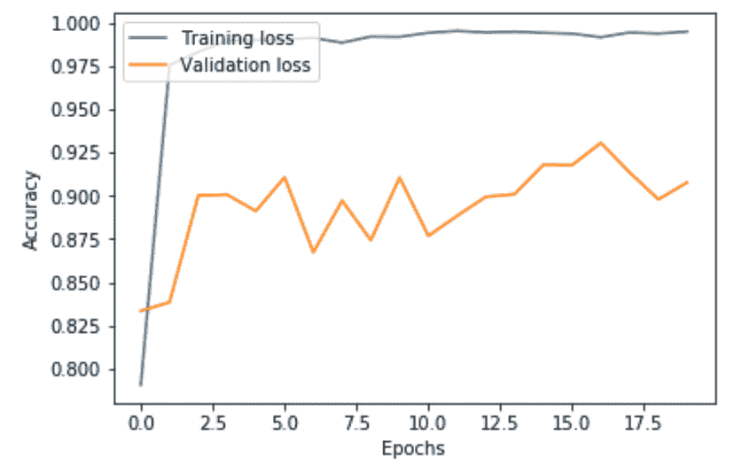
如上图所示，跨时期的训练损失高于验证损失，这是过度拟合的迹象。我们没有足够的训练样本来很好地训练神经网络。一些样本甚至在数据集中重复，这在网络中实际上被证明是琐碎和冗余的。这可能是添加辍学和高斯噪声层没有多大帮助的原因。无论如何，我们还可以保存训练好的模型以备将来重用，这将在下一节中讨论。
保存已训练的模型
在下一节中，我们将评估测试集上的训练模型，这将在下一小节中讨论。
import os
from pickle import load
from keras.models import load_model
os.environ["PATH"] += os.pathsep + 'C:/Program Files (x86)/Graphviz2.38/bin/'
from keras.utils.vis_utils import plot_model
plot_model(full_model, show_shapes=True, to_file='Localization.png')
# save the model
full_model.save('model.h5')
# load the model
model = load_model('model.h5')
评估模型
前面几行代码将显示准确度分数，如下所示:
results = full_model.evaluate(X_test_re, test_y)
print('Test accuracy: ', results[1])
然后，让我们计算性能指标:
1111/1111 [==============================] - 0s 142us/step Test accuracy: 0.8874887488748875
前面的代码块将显示以下输出，给出大约88%的F1分数:
predicted_classes = full_model.predict(test_x)
pred_y = np.argmax(np.round(predicted_classes),axis=1)
y = np.argmax(np.round(test_y),axis=1)
p, r, f1, s = precision_recall_fscore_support(y, pred_y, average='weighted')
print("Precision: " + str(p*100) + "%")
print("Recall: " + str(r*100) + "%")
print("F1-score: " + str(f1*100) + "%")
此外，我们还可以打印分类报告，以了解特定于类别的本地化:
Precision: 90.29611866225324% Recall: 88.11881188118812% F1-score: 88.17976604784566%
前面的代码行将产生以下输出:
print(classification_report(y, pred_y))
此外，我们将绘制混淆矩阵:

前面的代码行将产生以下混淆矩阵:
print(confusion_matrix(y, pred_y))
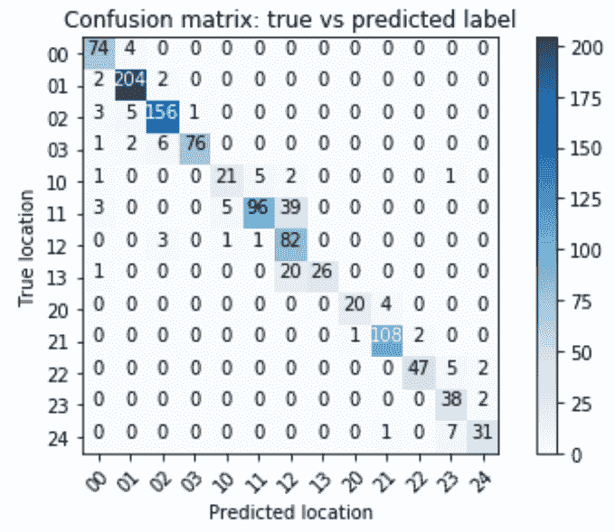
正如在前面的混淆矩阵中所看到的，我们的AE分类器对于类别11最容易混淆，并预测多达39个样本将被分类到网格12中。然而，我们仍然设法获得非常好的精确度。可能的改进建议如下:
在去除被拒绝的变量之后训练网络
部署技术
许多解决方案提供商和技术公司在商业上提供智能定位服务。使用室内和室外位置数据的Wi-Fi指纹识别，现在可以准确跟踪设备。在大多数这样的公司中，RSSI指纹定位被用作核心技术。在这样的设置中，具有不同RSSI值灵敏度级别的信号或消息(当然受邻近性的影响)可以被网关拾取。然后，如果网络中有个网关，从特定室内或室外位置获取的RSSI值将形成在该位置具有 n 个条目的RSSI指纹，如下所示:
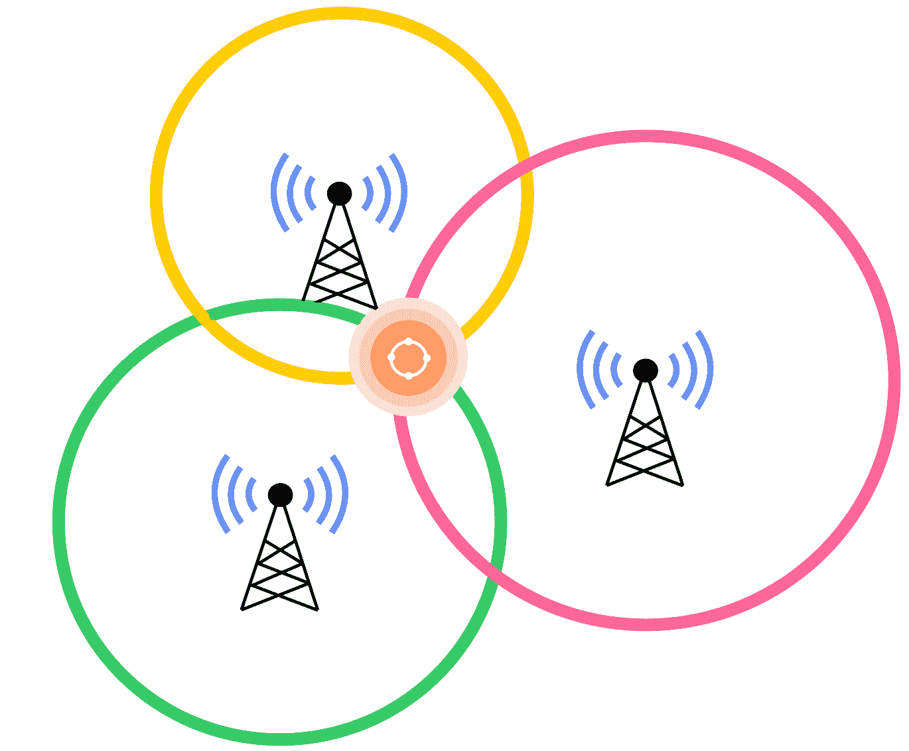
上图对应于以下等式:
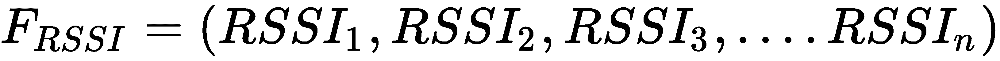
但是，在有大量网关(> 4个)的情况下，指纹在一定范围内可能是唯一的。一种部署技术可以是使用在后端服务的经过训练的模型，并将其作为Android或iOS移动应用程序。然后，应用程序监控来自已部署在室内位置的物联网设备的信号，将它们作为RSSI值插入SQLite数据库，并根据RSSI值准备测试集，并向预训练模型发送查询以获取位置。
下图显示了一个示意性架构，概述了此类部署所需的所有步骤:
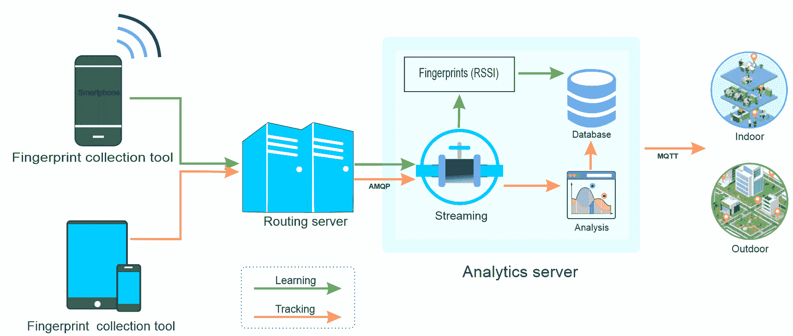
在这种情况下，经过训练的模型将作为迁移学习。然而，经过训练的模型可以作为使用Flask或DJango Python框架的web应用程序。然后，来自物联网设备的RSSI值和信号可以存储在数据库中，以丰富历史数据。随后可以使用Android或iOS应用程序跟踪位置。
摘要
在第6章、物联网中的生理和心理状态检测中，我们将讨论物联网应用中基于DL的人体生理和心理状态检测技术。考虑一个真实世界的场景，我们将看看两个基于生理和心理状态检测的物联网应用。
In Chapter 6, Physiological and Psychological State Detection in IoT, we will discuss DL-based human physiological and psychological state detection techniques for IoT applications in general. Considering a real-world scenario, we will look at two IoT applications based on physiological and psychological state detection.